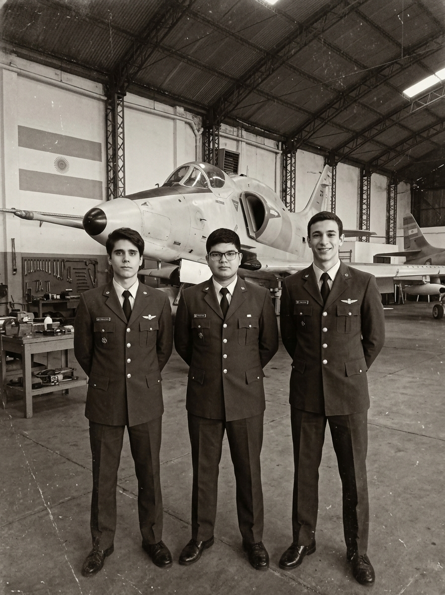

Forjados en la Escuela Militar de Aviación
La Leyenda de los Tres Fundadores

A finales de la década de 1970, en los pabellones de la histórica Escuela Militar de Aviación (EAM) en Córdoba, tres cadetes entrelazaron sus destinos compartiendo una misma obsesión por la vanguardia aeronáutica: Valentino Cuello, Otto Paetz y Jorge Casimiro. Lo que comenzó como prolongadas discusiones nocturnas sobre física de vuelo, aviónica de combate y diseño aerodinámico en las aulas de la EAM, pronto se transformó en la semilla de una iniciativa industrial sin precedentes.Valentino Cuello, con una visión estratégica y una inclinación natural por la arquitectura de sistemas aeroespaciales; Otto Paetz, dotado de una precisión matemática y rigor técnico en la ingeniería de motores y propulsión; y Jorge Casimiro, cuya agudeza analítica en sistemas de control y aviónica completaba el tridente perfecto, juraron al graduarse que sus conocimientos servirían para llevar la capacidad tecnológica nacional a un nuevo nivel.
El nacimiento formal de Valen Dynamics tuvo lugar en un modesto hangar adyacente a la base aérea, donde los tres jóvenes oficiales e ingenieros instalaron sus primeros bancos de prueba y mesas de diseño. Su primera gran prueba de fuego ocurrió durante la crisis del Atlántico Sur en 1982: respondiendo al llamado de la Patria, los tres fundadores trabajaron sin descanso en el acondicionamiento crítico de simuladores de vuelo, la integración de armamento y la reparación de células de combate para la Fuerza Aérea Argentina en condiciones límite.
A lo largo de las décadas siguientes, la compañía pasó de ser un taller experimental a convertirse en una potencia aeroespacial reconocida internacionalmente. Desde la modernización de cazabombarderos de rendimiento superior hasta el desarrollo de cazas de sexta generación, drones autónomos guiados por inteligencia artificial y recubrimientos de baja firma radárica, el legado de la EAM permaneció intacto en el ADN corporativo.
Los Tres Fundadores
Promoción EAM - Liderazgo y Especialización
Valentino Cuello
Ingeniero Aeroespacial / Fundador y PresidenteLíder estratégico, visionario del diseño aerodinámico y de la doctrina industrial de Valen Dynamics.
Otto Paetz
Ingeniero Aeronáutico / Co-Fundador y Director de I+DMente analítica, especialista en sistemas de propulsión híbrida, termodinámica y materiales compuestos.
Jorge Casimiro
Ingeniero en Aviónica / Co-Fundador y Director OperativoExperto en sistemas de guiado, automatización de vuelo, inteligencia artificial y radar.
Cronología Institucional
Paso por la EAM
Coincidencia de Valentino Cuello, Otto Paetz y Jorge Casimiro en la Escuela Militar de Aviación (EAM) en Córdoba. Creación del primer grupo intercadetes de estudio sobre aerodinámica avanzada.
Fundación de Valen Dynamics
Egreso de la EAM y fundación formal de Valen Dynamics en un hangar de la Guarnición Aérea Córdoba.
Guerra de Malvinas
Apoyo técnico operativo urgente a las escuadrillas de la Fuerza Aérea Argentina. Modificaciones de emergencia en sistemas de navegación y mantenimiento acelerado de cazabombarderos.
Consolidación e Innovación
Expansión industrial. Jorge Casimiro lidera la informatización de los sistemas fly-by-wire, mientras Otto Paetz patenta el primer sistema de propulsión híbrida regional.
Proyección Internacional
Alianzas internacionales y desarrollo de tecnologías furtivas (RAM) junto con proyectos de drones tácticos de reconocimiento.
Sistemas Autónomos
Transición generacional y preparación de las nuevas plataformas no tripuladas e integración de inteligencia artificial.